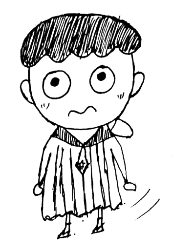

本人姓张名超，大家都叫我超哥，不过亲切的还是会叫我超超。
喜欢极客的生活方式，不过都是一些小爱好，没有什么大成就。
Github: https://github.com/Lanseria
个人的视频站: http://i.youku.com/zhangchao564265135
视频站中，记录从我高三开始的制作视频历程，从一开始上传PS视频教程，学习PS，再到大学生活开始后，细学了一些PR，AE等Adobe软件，自己空闲制作的动画，微电影之类的作品。不过都不是特别的完美。到后来开始录制自己的编程视频教程，自己尝试着做老师，为大一，大二讲解一些计算机编程方面的基础知识等等。
个人在高三无聊的时候做过一些现在看来有些不可思议的事。可能是对设计的一些热爱吧。高三的上学期，学习可能太累，父母也没有太多管束，我就会偶尔用下姐姐的笔记本蹭网上贴吧了解下PS，什么易语言等等，那时不懂什么是编程，所以没学进去。但是PS还是有些程度，所以就在快要过圣诞节的时候，在Ps上做了一幅有关Apple与圣诞相关的电子黑板报，并打印了出来，并偷偷地在周日下午，一个人去自己班的前面的黑板前，粗糙的画下了这个我自己认为还是很好看的节日主题。
顺便将在义乌小商品店买的雪花片，贴在了窗上。等一切任务都完成后，看着整个教室都散发着圣诞的味道，我心里也开心了不少，后来的几天，别的班也自己挂起来雪花片，那时我也暗暗自喜，虽然没有跟班级人说，这个是我弄的，主要也是因为怕挨骂。现在想想那时的我真是天真呐。
不说高中了，就因为这些事，大学没考好
在大学，上了离家挺远的学校，环境就那个地方而言，算是不错了，但跟我家相比，那就简直差远了。没错，就是郑州。
不过环境差也没法自己拜托，好好学习才是真的。大一开始看现在，转眼间，自己就是快要毕业的人了，可以说，既然学了计算机，就不能比不学计算机的差，和老师做过的项目也不多，一般都是自己一个人完成，最多别人写写技术文档，相较于写文档，我还是喜欢空余时间学学新技术的。但也没法子，实验室没有搞这类技术的，我说的可以是PHP，也可以是Node。所以不管是参加比赛，还是从老师那儿拿到一些助研费，还是公司的补助，都是我一个人在自己默默的学，不懂了google,看看技术文档。所以一般的问题都能很快解决。如果你问我实验室都在学些什么，有Java，C#，硬件的都是写单片机，或者用用买回来的无人机，看起来挺叼的，但也就是在别人写好的基础上，自己改改东西，焊焊电路，真正的硬件牛人还是要挺过一些尝试期，软硬件都十分精通才可以，所以，我放弃了硬件。
如果要问我会点什么，我这边可以总结下，会的都不精，但是在努力学精，比如大一的C语言，从结构体到指针，大三暑假又复习了一遍，会了一点网络的编程与线程。
JAVA碰过，那也只是碰过，大三快结束的时候，学着它做了个andriod的应用，很简单，就是为了与硬件进行TCP通信，结果到界面线程那儿懵逼了。所以没走下去。
C#也是大一学长教的那些，写过简单的管理宿舍的网页，github上有。主要在之后也同样跟java一样捡了起来，用做TCP服务器的搭建，客户端的连接等等CS应用。
其实在大二，我主要学的是PHP，因为太简单，所以在同届中，我不仅能很快的开发出一个网站，前端也在同时学了差不多，包括数据库，linux也一块儿学完了，现在想想真是可怕，兴趣真的很重要吖，不知道我是怎么学完它们的。同时，带着它去参加了计算机设计大赛，不过成绩不怎样，不过现在看来其实这类比赛并没有多大重要，还是学点基础重要些。参与比赛的是二手交易平台，github上有。
接着开始用同一个框架TP3.2，做过好几个项目，像报名系统，这个不说了，但是当时实在想不出其它方法，所以想出如此糟糕的方案，以后必定重写一份。还有老师想的考试系统，这个还是具有一定挑战性的，我个人也比较满意，因为学到了许多新知识。接下来就是接到公交公司的微信公众号的项目，学了几个月的微信公众号，但是没谈下来，还是因为没有什么项目经验。
接着，就是有一天，开始学习新的框架，听说国外PHP框架laravel用的十分多，于是开始学习，一开始，哇，哭了，完全跟TP不一样吖，好复杂，语法糖好多，记得东西更多，干脆放弃，不过同时了解到laravel其实要与node.js相结合，所以想略微学习下node.js 不过这一学就不可收拾。完全被js的魅力迷住，然后就没了下文。
结合着这些内容，我开发了阿里大于的短信API，cheerio的抓包，室友的C暴力算法，加上上面那两个php项目，合成一个社团管理系统，又去参加了比赛，或者省赛二等，国赛三等的小成绩。看了比赛才知道，哎，也就那样。
以上，我几乎已经把我大学三年的事加上高中的事讲完了一遍。现在在找找前端工作，甚至全栈或者PHP工程师，不过以我现在的能力，肯定die在第一轮，基础不行。所以，现在的我正在学习着React这个全栈框架，顺便复习着js内容，并打算接触下koa下一代的网站框架，顺便学习下callback hell 这个到底怎么解决，有哪些解决方案，那些方案具体怎么实现的，这都可是要在面试或者笔试中问到的。计划呢，在我以后真正工作赚钱了，我一定先买一台macbook pro用来敲代码，毕竟是程序员，没那个不行的。等这些都搞完了，开始学习人工智能，这些颇有远见的技术。哇，可能哦。
| # | Props | Value | notes |
|---|---|---|---|
| 1 | 姓名 | 张超 | none |
| 2 | 电话 | 18858395625 | none |
| 3 | 564265135@qq.com | zhangchao564265135@hotmail.com | |
| 4 | 地址 | 浙江舟山 | none |
| 5 | 毕业学校 | 郑州轻工业学院 | none |